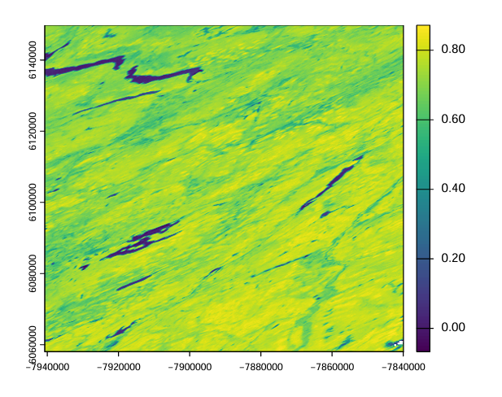
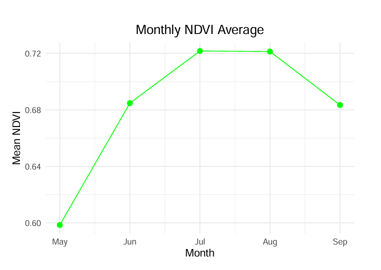
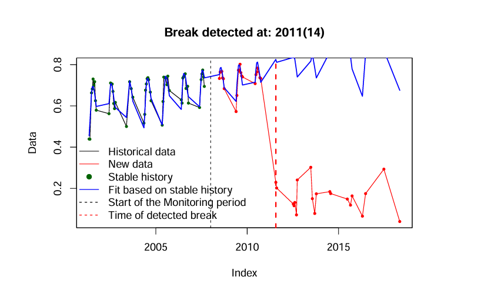
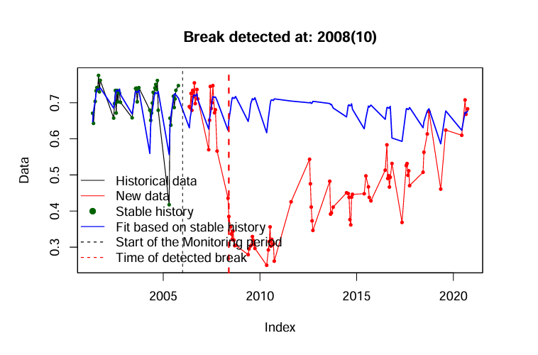
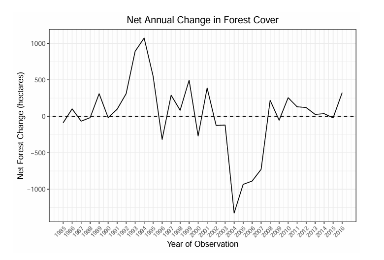
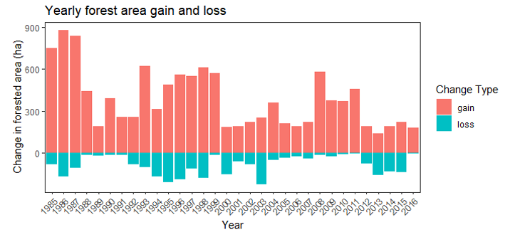

This project performs two complementary time series analyses in R. The first uses MODIS NDVI data (MOD13Q1) over Yellowhead Country, Alberta to detect vegetation change breakpoints using the BFAST algorithm. The second analyses a 33-year Landsat-derived land cover time series near Williams Lake, BC to quantify annual forest gain, loss, and net change between 1984 and 2016.
ggplot2| File | Description |
|---|---|
MOD13Q1_TS/ | 460-layer MODIS NDVI time series (2001–2020), 250 m resolution, 16-day composites |
roi_MOD13Q1.shp | Two point regions of interest (ROI A and ROI B) in Yellowhead Country, Alberta |
VLCE_TS/ | 33-layer VLCE land cover time series (1984–2016), 30 m resolution, near Williams Lake, BC |
lc_reclassification.csv | Lookup table for reclassifying VLCE land cover classes to binary forested/non-forested |
| Package | Purpose |
|---|---|
terra | Reading, processing, and analysing raster time series |
sf | Reading and handling vector ROI data |
bfast | Break detection in NDVI time series (bfastmonitor) |
dplyr, tidyr | Data wrangling and reshaping |
lubridate, stringr | Date parsing and string extraction from filenames |
ggplot2 | Time series and bar chart visualization |
readr | Reading CSV files |
MODIS NDVI filenames were parsed to extract Julian dates, converted to R Date objects, and loaded as a SpatRaster. Median NDVI was calculated per pixel across the full time series. NDVI was extracted at two ROIs and filtered to May–September for monthly summary. The BFAST monitor algorithm was applied to both ROIs using stable history periods to detect deviations from expected seasonal NDVI patterns. For the land cover analysis, 33 annual VLCE rasters were loaded and reclassified to binary forested/non-forested using a lookup table. Lagged raster differencing identified annual gain (+1) and loss (−1) pixels, which were converted to hectares and summarized into a forest_change data frame. Results were visualized as a net change line plot and a stacked gain/loss bar chart.

Median NDVI raster map over Yellowhead Country, Alberta (2001–2020)

Connected scatter plot of monthly mean NDVI (May–September) averaged across both ROIs for 2001–2006

BFAST monitor output for ROI A — break detected at 2011, consistent with a stand-level disturbance

BFAST monitor output for ROI B — break detected at 2008, consistent with vegetation recovery

Net annual forest change line plot showing gain and loss trends near Williams Lake, BC (1985–2016)

Annual forest gain and loss bar chart (1985–2016) showing stacked gain and loss in hectares
stringr and lubridateterraterra::extracttidyr::pivot_longerdplyrts objects and applying BFAST change detectionterra::classifyterra::diffterra::globalggplot2